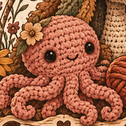
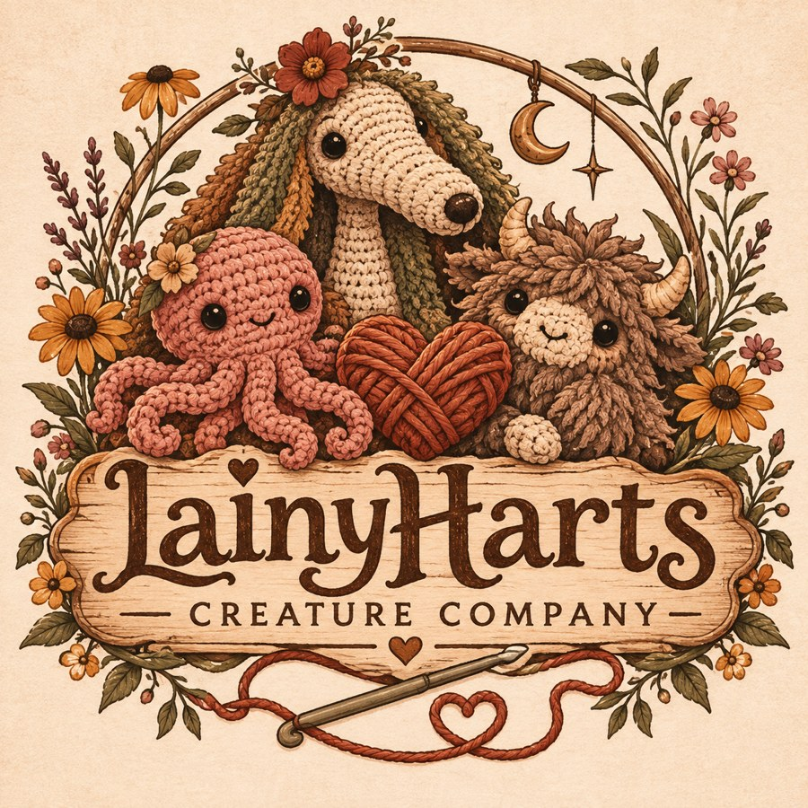

The Fuzzy Octopus
Eight curly arms of rosy, frosted fluff. Built for squeezing.

LainyHartsHand-knit creatures · one stitch at a time
Pufflings are squishy, hand-knit friends from LainyHarts Creature Company. Every one is made by hand, so no two come out quite the same: each has its own wobble, its own face and its own personality.

They're finger-knit from soft, plush yarn (no needles, just hands), stuffed full, and given their faces last. That's the moment a pile of yarn turns into somebody.
A few of the creatures that have come to life in her hands so far.
Eight curly arms of rosy, frosted fluff. Built for squeezing.
Floppy ears, a shaggy mane, and a satin bow tied on his tail.
Rosy paws, fluffy ears, and a little golden crown of yarn.
The maker
I make pufflings: soft, squishy, hand-knit creatures with big eyes and a lot of heart. Each one starts as a pile of yarn on my couch and, a lot of stitches later, becomes somebody's new favorite thing to hold.
LainyHarts Creature Company is just me, my yarn, and whatever creature wants to be made next. Thank you for stopping by. Pull up a blanket and stay a while.
Lainy
or write to LainyHarts@gmail.com